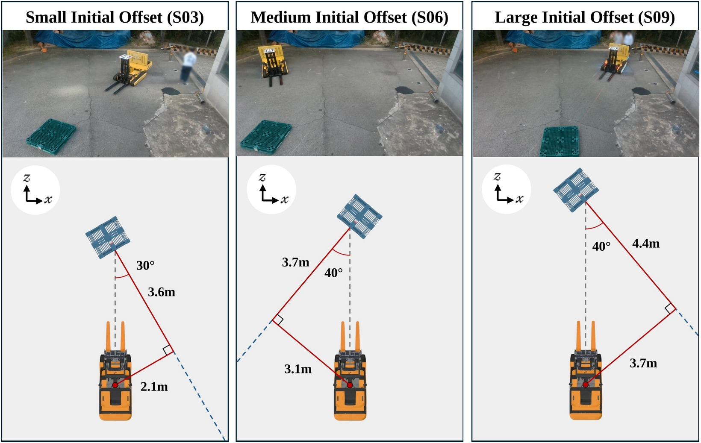

Forklift–Pallet Alignment Using Only a Single RGB Camera
Real-world trials: 9 initial configurations × 3 trials. All 27 trials completed alignment and fork insertion.
The overhead camera and the forklift AprilTag are used only for evaluation.
Repository

S01 Mild initial offset · 3.0 m ahead, yaw 0° · lateral offset 0.0 m
Trial ATrial BTrial C
S02 Mild initial offset · 3.2 m ahead, yaw +15° · lateral offset 0.9 m
Trial ATrial BTrial C
S03 Mild initial offset · 3.5 m ahead, yaw -30° · lateral offset -2.0 m
Trial ATrial BTrial C
S04 Moderate initial offset · 3.8 m ahead, yaw +30° · lateral offset 2.2 m
Trial ATrial BTrial C
S05 Moderate initial offset · 4.0 m ahead, yaw -30° · lateral offset -2.3 m
Trial ATrial BTrial C
S06 Moderate initial offset · 4.2 m ahead, yaw +40° · lateral offset 3.5 m
Trial ATrial BTrial C
S07 Large initial offset · 4.5 m ahead, yaw -40° · lateral offset -3.8 m
Trial ATrial BTrial C
S08 Large initial offset · 4.7 m ahead, yaw +40° · lateral offset 3.9 m
Trial ATrial BTrial C
S09 Large initial offset · 5.0 m ahead, yaw -40° · lateral offset -4.2 m